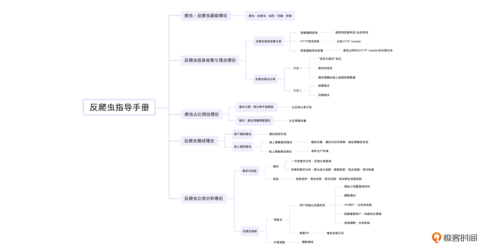

- 00 开篇词 如何突破“爬虫反爬虫”内卷之怪现状？.md.html
- 01 爬虫需求的诞生：我们是正经的软件工程师.md.html
- 02 爬虫的内卷和黑化：我们变得不正经啦.md.html
- 03 反爬虫的发展以及展望：我们也不是什么正经工程师.md.html
- 04 爬虫的首轮攻势：如何低调地拿到自己想要的数据？.md.html
- 05 反爬虫的应对之策：通用且基本的检测规则是什么？.md.html
- 06 爬虫攻势升级：分布式的意义在哪里？.md.html
- 07 反爬虫升级：如何判定你是个真人？.md.html
- 08 博弈的均衡：如何对抗道德的沦丧和人性的扭曲？.md.html
- 09 反爬虫概述（一）：高收益的后端能做哪些基本的事情？.md.html
- 10 反爬虫概述（二）：无收益的前端是怎么进行key处理的呢？.md.html
- 11 反爬虫概述（三）：前端反爬虫是怎么做信息收集的？.md.html
- 12 反爬虫概述（四）：前后端都不合适的时候如何进行处理？.md.html
- 13 反爬虫基础理论：这是唯一一节严肃的纯理论课.md.html
- 14 低耦合：如何快速下线反爬虫系统？.md.html
- 15 规则引擎：如何快速响应突发的爬虫需求？.md.html
- 16 验证爬虫：我到底要不要百分百投入？.md.html
- 17 招聘篇：如何写一个合适的JD？.md.html
- 18 如何搞定老板（上）：如何编造虚无缥缈的OKR？.md.html
- 19 如何搞定老板（中）：如何组建团队.md.html
- 20 如何搞定老板（下）：团队考核怎么做？.md.html
- 加餐 反爬虫的专家级鉴别力：用户习惯检测.md.html
- 春节加餐01 破解还是不破解，这是一个问题.md.html
- 春节加餐02 真实世界里，小心屠龙勇士变恶龙.md.html
- 春节加餐03 低调驶得万年船.md.html
- 答疑课堂 爬虫反爬虫调试对抗技巧以及虚拟机详解.md.html
- 结束语 达到理想不太易.md.html
- 捐赠
13 反爬虫基础理论：这是唯一一节严肃的纯理论课
你好，我是DS Hunter。
前面12讲，我们讲完了反爬虫的所有操作，但是你可能会觉得，这样一攻一防的讲解在应用的时候会存在割裂感，实际工作中，还是摸不透反爬虫的整个流程。
那么今天，我就带你完整地走一遍反爬虫流程，从信息收集开始，到对爬虫的预估、线上测试，对工作需求的分析，最后，也会告诉你在流程中存在的风险点。
希望你能够通过今天的课程，理解那些反爬虫里严肃的纯理论知识。甚至，你可以把今天的课程当作反爬的标准流程手册。当然，我更希望你能通过今天的总结，了解反爬虫到底反的是什么。是爬虫，还是商业竞争？
在课程开始之前，我推荐你点开这一讲的音频，可以说，和课程的风格是完全的AB两面，至于如何不同，就等你点开来听了。
爬虫反爬虫基础理论
首先，我们回顾一下爬虫反爬虫的基础理论。我在上一讲提到过，当你不知道采用什么样的手段反爬的时候，回归初心，往往能够帮助你出奇制胜。
有的时候，你的反爬可能真的是因为竞对，也可能这就是一个因为技术界轮子太多，不得不另辟蹊径、完成目标的一个选择。你可以想想：
一个阴霾的晚上，伸手不见五指，你和你的Leader，在一家小龙虾店聊工作。- - 你的领导剥着小龙虾，对你说：“又一个双月要过去了，我们什么轮子也没造，下个月的目标恐怕不好写啊。”- - 你思考了一下，和领导说：“领导，不如我们另辟蹊径，选一个非主流的方向，我们造个反爬虫的轮子如何？爬虫就是大家说的抓取啊，嚣张点，起个TCP链接直接干到对方服务器上，把数据都拉下来就行了，反爬虫就是，别人拉我们数据，我们就干他，让他敢这么嚣张。”
那么，接下来我们在向上对齐的时候就需要有一个看起来官方一点的、正式的定义。我们来复习一下。
- 爬虫：使用任何技术手段，批量获取网站信息的一种方式。关键在于批量。
- 反爬虫：使用任何技术手段，阻止别人批量获取自己网站信息的一种方式。关键也在于批量。
- 误伤：在反爬虫的过程中，错误地将普通用户识别为爬虫。误伤率高的反爬虫策略，效果再好也不能用。
- 拦截：成功地阻止爬虫访问。这里会有拦截率的概念。通常来说，拦截率越高的反爬虫策略，误伤的可能性就越高。因此需要做个权衡。
- 资源：机器成本与人力成本的总和。
是的，这些定义完善又好理解。换句话说，我们常说的反爬虫要做的就是基于分布式平台下的数据加密保护。而且，在反爬虫开始前，我们一定要明确，那就是爬虫和反爬虫从来不计较一次两次的请求得失，甚至有意会放过对方来达到一些迷惑效果。
爬虫与反爬虫的博弈，是一种针对批量数据进行斗智斗勇的游戏，其中反爬虫需要在尽可能保持高拦截与低误伤率的要求下进行。这种博弈以资源消耗为战争手段，以商业优势为最终目标。
反爬虫信息收集与埋点理论
在明确了我们的最终目标之后，实际上，我们要做的第一件事就是收集信息了。信息收集是反爬虫的基石，完成了这一步，才能开始后续的所有操作。
反爬虫信息收集，指的是通过前端辅助，或者通过http请求信息，获取用户信息，用于后续分析判定的一种行为。该信息可能直接被加密上传，也可能被提取特征后上传。
反爬虫信息收集分类
这时候的你，已经明白信息收集的意义了。接下来咱们就来走一遍信息收集的过程。我们都知道，前后端都可以收集信息，那到底收集什么信息呢？
这里，我将反爬虫信息收集的类型分为三类：前端辅助信息、HTTP请求信息收集以及两者辅助同时收集。
针对第一类，我们主要的收集手段是使用js代码，提取浏览器特征或者业务特征。具体操作方式包括Canvas指纹以及DOM指纹，或者定制化特征提取。
针对第二类HTTP请求信息，我们可以通过分析HTTP Header信息来进行规则提取，并经由规则引擎分析，进行处理。
那么最后一类，可能相对复杂一些。我们需要通过查找js特征与HTTP Header的关联关系，并针对这种关系进行分析。例如客户端的location.href与Ajax的referrer，应该有匹配关系。这些关系都可以成为监测点。
反爬虫埋点分类
看起来，我们的信息收集已经完整、可行了。不过只收集信息，不能产生信息反哺回系统，似乎也不够闭环，也会出现被质疑的情况。那么不论出于什么样的目的，是打破质疑还是验证反爬效果，我们都需要收集埋点信息让整个反爬形成闭环。
反爬虫埋点，其实就是由反爬虫系统产生，可以用于验证反爬虫系统效果的数据。我们通常将这里的数据分为三类：
第一类，经由反爬虫系统分析后得出的“是否为爬虫”标记。- 第二类，爬虫的特征，如类型，来源，数量，等等。- 第三类，测试策略的线上检测效果数据。
当然，根据埋点收集方式，埋点又可以分为前端埋点与后端埋点，前端埋点由前端进行收集，后端埋点由后端独立进行收集。
通常来说，“是否为爬虫”标记，在后端可以独立进行收集，尽可能不要过前端，因为前端没有秘密，过前端等于告诉爬虫自己是否中招。而第二类爬虫特征的采集，不关注采集途径。不过如果来自前端，则需要适当加密。测试策略线上检测效果，我们一会谈到“反爬虫线上策略测试理论”的时候，会详细展开。
爬虫占比预估理论
接下来我们面对的问题，就是给拦截的成果定性定量了。你要知道，反爬基本是在明处的，而爬虫在暗处，如果我们也不知道自己拦截了多少爬虫，这样看起来一拍脑袋就决定了的规划送上去，要直接被拍死的就是自己了。
所以，我们需要一个可以定量衡量的指标。
反爬虫的衡量指标，主要在于拦截率以及误伤率。这两点都需要预估线上爬虫量，才能进行估算。这里，给你提供两个公式。
拦截率=拦截掉的爬虫/线上爬虫总数。
拦截掉的爬虫等于：拦截爬虫量-误伤量。
其中，误伤量可以通过误伤检测来计算。在这一讲最后“反爬虫误伤监测方法”会展开说明，而
线上爬虫总数需要通过爬虫占比来预估。
爬虫占比=爬虫量/总访问量
事实上，这个比例是持续变更的，因此不是一个固定值。所以，在工作交流中，我们也可以用“爬虫量”来代替“爬虫占比”。这里，我也会给你提供两个计算爬虫量的方法。
基本公理：转化率不变原则
第一个方法，利用的是转化率不变的原则。
我们都知道，转化率=用户下单量/总UV。而转化率不变，其实是由于商品转化率取决于商品品质，用户画像等恒定不变的特征。那么，在这些恒定特征不变的情况下，我们可以认定，转化率在单日内不发生改变。
因此，我们可以得出一个推论：订单=访问量*转化率。因此，访问量=订单/转化率。如果转化率不变，那么订单曲线经过一个合适的乘法加权，订单曲线应该与流量曲线重合。如果两者不重合，那么差值就是爬虫量。
推论：爬虫流量周期理论
第二个方法，是从我们做爬虫的时候会“周期性的用JOB去抓取数据”这件事中提炼出来的方法。你会发现，这样周期性的抓取，会导致流量上存在周期性的爬虫流量。
用一句话来概括爬虫流量周期理论的话，那就是，如果订单曲线加权后与流量曲线做差，得到的曲线依然有周期性的差值，那么这个差值就是周期性的爬虫。可以直接刨除。
上述讲到的两个理论，虽然不能精准算出爬虫的占比，但是经过一些预估以及计算，当加权订单曲线可以与流量曲线重合时，就可以认为爬虫已经几乎被排除光了。那么，排除掉的那些流量，就是预估的当天爬虫量。
最后，我也给你提供一个取巧的方案：反爬虫的效果，取决于排除掉爬虫后的流量曲线，与加权订单的重合度。重合度越高，效果越好。这样，我们也可以不计算爬虫量，直接评估反爬虫效果。
反爬虫测试理论
在信息收集、占比预估的部分准备结束之后，我们就可以准备测试了。反爬虫策略直接上线风险极高，同时，我们还要联动测试团队，不能给他们拖后腿的理由。
线下测试理论
我们都知道，反爬虫的代码有两部分，一部分是策略代码，一部分是框架代码。策略代码千变万化，难以穷尽，线上场景又十分复杂，因此，不适合线下测试。而框架代码不同，它本身是不变的，因此可以在线下进行测试，完善后再上线，降低上线风险。
所以，反爬虫线下测试，其实就是在上线前，使用测试环境，对反爬虫不变的框架代码，例如engine、规则引擎等等，进行详尽的测试，保证研发质量，降低上线风险。
线上测试理论
那么，需要线上测试的策略代码呢？碰到测试环境无法模拟详尽的情况，是不是需要进行线上测试？但是，线上测试本身又存在风险，因此我们需要寻找安全的线上测试方法。
线上策略测试理论
通常，反爬虫的策略提出时，他的安全性是存疑的。在线上运行一段时间后，如果还没出问题，那么可以认为对用户无伤害。但是如果存在问题，发现的时候，伤害已经造成，不能挽回。因此，我们可以借鉴青霉素皮试的方案，开启小流量尝试对用户进行伤害，这样可以在伤害最小的时候得出策略安全与否的结论。
然而，小流量的伤害依然可能是不可控的。我们可以再借鉴下疫苗的思路，进行假装拦截，看是否有问题。如果没问题，就让策略上线，成为“抗体”。
具体做法有四个步骤。首先，针对价格请求，除了线上策略外，我们可以额外增加测试策略A。接着，测试策略A本身如果鉴定请求为爬虫，不进行拦截，写入Cookie证明这是爬虫。但是注意要与线上的Cookie错开，避免无法拆分。再之后，我们可以在误伤检测看板观察误伤情况。由于这是测试策略，可以长时间观察，证明是否有害。最后，观察结束后可以将策略标记为“无害”，并下线测试策略。后续随时可以真正上线。
从刚才的四步中，你应该也可以明白了，反爬线上策略测试，指的是对线上流量进行模拟拦截，通过长时间观察，验证策略安全性的一种测试方法。这样，我们也就算找到了安全的线上测试方法。
线上熔断测试理论
最后，万一反爬虫真的出事了，我们也可以选择熔断。这个熔断的测试，其实就是：针对反爬虫的框架代码进行彻底关闭以及自动关闭功能的测试。我们的目标，永远是保护生产环境。
我们永远要记得，熔断并不是什么丢人的事情。反爬虫是一个低ROI的非关键需求，又容易出事。熔断，其实是属于牺牲自己，保护生产。
不过这里要注意的是，熔断本身也可能会引发新的故障，那就会导致额外的追责，不利于进一步发展反爬虫团队。新故障的解决方案，我们会在《14讲｜低耦合》中详细讲解。
反爬虫立项分析理论
完成了信息收集、定量分析以及测试之后，我们就可以准备立项了。这里，我们通常会针对反爬虫低收益、高风险的特殊情况逐一分析。
需求与收益
反爬虫的需求分析，有极强的技术倾向，普通产品经常力不从心，甚至可能会拖后腿。因此，我更推荐由技术转行的反爬虫产品经理，而不是直接招聘。
反爬虫的需求分析，包括一次性需求分析以及持续性需求分析。一次性需求分析，通常定制化程度较高，可能产品突发奇想要做点什么，就成了反爬组的任务之一了。而持续性需求分析，包括爬虫进化追踪、数据变更、埋点检测、竞对监测等等，属于基础的监测。
至于收益分析，算下ROI就可以了。但是要注意，反爬虫是低收益项目，因此收益分析很关键。所以，如果真的需要分析收益，我们可以从信息保护，商业优势，竞对压制以及竞对爬虫资源消耗等方面切入。这些别人眼里的偏门，才是我们的价值所在。
反爬虫风险
立项的问题解决之后，我们就要考虑风险控制了。如果说反爬虫的收益分析主要用于项目组能生存下来，那么反爬虫的风险控制主要就是让自己能够不死。
反爬虫的风险点通常在于伤害用户体验、降低系统稳定性以及商誉PR风险等等。
针对伤害用户体验以及降低系统稳定性两点，我们都可以认为是系统问题。这里，我们通常有五种解决方法。
首先，我们可以增加小流量测试时间，因为小流量意味着小的伤害，可以用较长的时间，逐渐在不损伤用户的前提下发现问题，避免造成大的事故。同时，我们还可以使用静默测试，也就是只检测不拦截，类似战争演习，不真正造成损伤但是达到练兵的效果。第三点，我们也可以针对VIP用户，增加白名单机制。毕竟误伤了谁都不能误伤我们的VIP用户。那么针对短期、重要用户，我们也可以增加快速洗白逻辑，这也是我们的第四个方法。最后，我们甚至可以再增加快速熔断机制以及快速关闭机制，选择暂时放弃反爬。
至于商誉PR的风险，我们要么甩锅给技术、要么甩锅给竞对。当然了，推来推去也不是件什么得意的事，最关键的还是要增加全面日志，避免发生问题难以重现。
最后，如果真出了大问题，那应该就是大量误伤了用户，也就是将线上用户错误地识别成了爬虫。那么，怎么才能发现出了误伤的问题呢？我们通常选择在用户访问流的上游进行反爬测试，并针对爬虫进行标记，然后在下游进行标记检测的方法来检测误伤。理论上说，因为标记的都是爬虫，因此下游不可能读取到标记，一旦读取到，就是反爬虫误伤。
而出现了误伤之后，我们也可以增加静默测试时间来补救。在静默测试规则转为正式规则的时候，也一定要进行长时间的观察，同时要设置快速回退机制，保证在发布有问题的时候，能够退回到没发之前的状态。
小结
现在，我们已经走完了整个反爬流程。我在这里也给你准备了一张反爬虫流程图。在你不知道要采取什么样的措施或动作的时候，希望它可以给你提示。

在开始反爬之前，我们做的就是明确反爬的目的，注意，我们不是一味地拦截，我们也没有机器人洁癖。反爬虫要做的核心，是找到那些ROI不高的账号。
所以在前期，我们需要收集不少的信息作为后续动作的参考。同时，我们也需要去评估整个反爬虫的效果。效果的重点不在于数量，而在于商业上的胜利。在反爬虫系统正式上线前，我们也需要通过一系列的线上、线下测试。最后，基于反爬的特殊性，我们更需要明确这项工作的收益点，同时将风险降到最低。
思考题
作为理论与实践案例篇的最后一讲，今天的思考题还是有些不同的。
不知道你还能不能想起来在这一讲开始的时候我给你描述的情境。想象一下，如果这上面的所有理论梳理，都是你在给领导讲述下个月的可行动作呢？现在，你的领导应该已经忍不住哈哈大笑了吧——好像自己下个双月的所有规划已经写好，可以划水了。
这个时候，你们所在的小龙虾摊位的老板也走过来，又上了一盘小龙虾，忍不住问道，“二位是做互联网的吧？今天是不是谈了什么非常开心的事情？”
也许，你会不由得大惊，问道：“老板你怎么知道的，你偷听了我们的全部谈话么？这个规划我们还没写，你可不能透露出去啊，不然没准明天就成别人的规划了，”
老板笑了笑：“放心吧，没怎么听，只是感觉你们刚开始愁眉苦脸，不说人话，我就感觉你们应该是做互联网的。然后谈着谈着慢慢开始正常讲话了，谈开心了，就忍不住暴露本性说起了人话，我在这修罗城也卖了三十多年的小龙虾了，不说人话的互联网人都会堕落到这里来，只要说上几句人话，就能逃脱苦海，回归正常生活，然而我这生意是越做越红火，流量也是越来越大，我在小龙虾里也对配料进行了AB测试，看起来你们吃的这个版本的配方，是效果最好的啊！你们抬头看看，今天的月色美不美。”
你忍不住抬起头来，看了看天上的圆月，忍不住一阵头晕，忽然感觉空间扭曲，时间混乱，一眨眼，自己居然拿着手机在听极客时间，耳边又传出了熟悉的声音：
“你好，我是DS Hunter，刚刚就是理论课的全部内容，真的十分枯燥，希望你没有听睡着。下面是愉快的思考题时间：”
- 吃小龙虾时的雾霾天，反映了你的什么心理活动？
- 伸手不见五指的夜晚，却能看到圆月，作者想通过这样强烈的反差表达什么思想？
- 小龙虾的配料进行AB测试，需要进行AA校验吗？
期待你的不正经回复，我会在评论区与你们愉快地进行更不正经的互动。
© 2019 - 2023 Liangliang Lee. Powered by gin and hexo-theme-book.